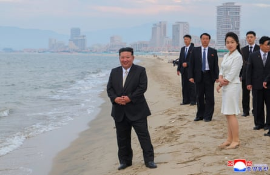
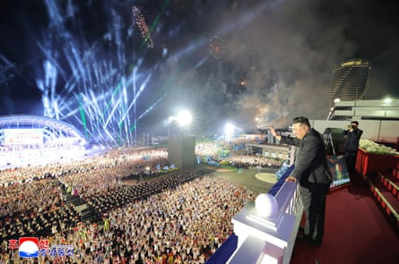
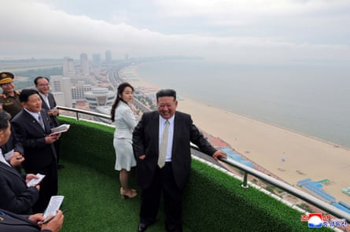

Kim Jong-un is more accustomed to overseeing ballistic missile launches and political purges, but this week the North Korean leader opted for a change of pace with a family visit to a new beach resort – the vanguard in a tourism drive that may one day include foreign visitors.
Kim, who had swapped his trademark Mao suit for a dark suit, white shirt and tie that matched the sandy expanse of Wonsan Kalma, hailed the coastal resort as one of the country’s “greatest feats” of the year, the state-run KCNA news agency said in a report issued on Thursday.
Accompanied by his daughter – and presumed heir – Kim Ju-ae, and his wife, Ri Sol-ju, Kim relaxed poolside, a pack of cigarettes, cold drink and towel at his side, as they watched holidaymakers barrel down a pair of waterslides on Tuesday.
Kim Jong-un (left) and his daughter Kim Ju-ae (third right) on a beach at the Wonsan Kalma coastal tourist zone in Wonsan, North Korea. Ju-ae is his presumed heir.Photograph: KCNA/EPA
Kim and his daughter – who is thought to be one of three children he has had with Sol-ju – were also photographed on a 4km-long beach, surrounded by officials and with what appears to be hotels in the distance.
After months of international condemnation targeting Pyongyang’s nuclear weapons programme and its material support for Russia’s war against Ukraine , the outing marked a return to the occasional soft-focus coverage of North Korea’s first family.
Located on the country’s east coast, the resort boasts sports and recreation facilities as well as commercial and public catering services, KCNA said, adding that Kim had “expressed belief that the wave of the happiness to be raised in the Wonsan Kalma coastal tourist area would enhance its attractive name as a world-level tourist cultural resort”. Authorities hoped the resort would attract 20,000 visitors a year after it opens on 1 July, KCNA said.
Kim Jong-un at a ceremony celebrating the completion of the resort, which will not be open to foreigners.Photograph: KCNA/Reuters
After cutting a ribbon at an opening ceremony, Kim said the project had finally become a “brilliant reality” after more than a decade of work and rising construction costs. It would, he said, “play a leading role in establishing the tourist culture” of North Korea .
But foreign tourists hoping to sample a beach holiday, North Korean-style, will be disappointed. For now, it appears that Wonsan Kalma will be open only to locals while the North slowly relaxes restrictions on overseas visitors introduced during the Covid-19 pandemic.
Regular tourism is still effectively banned, although Russian tourists have been allowed to visit certain parts of the country on group tours, and foreign runners competed in a marathon in Pyongyang in April.
Kim Jong-un and Kim Ju-ae on a balcony over the beach. North Korea’s leader says the resort will produce a ‘wave of the happiness’.Photograph: KCNA/Reuters
The Kims’ visit inevitably sparked palace intrigue among North Korea watchers. Ri-sol was making her first public appearance since she attended New Year celebrations in 2024, South Korean media reported, adding that she appeared to be carrying a Gucci bag – a possible violation of UN sanctions banning the export of luxury items to the North.
Kim’s daughter, who is aged about 12, has regularly accompanied her father since late 2022, reinforcing speculation that she is being lined up to become the fourth member of the Kim dynasty – and the first woman – to lead North Korea since it was founded in 1948.